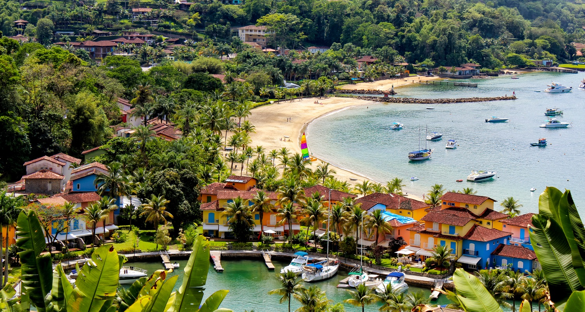
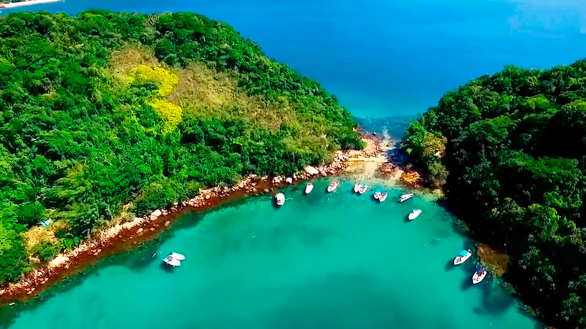

Angra dos Reis
Angra dos Reis é um destino turístico de renome no estado do Rio de Janeiro, conhecido por suas águas cristalinas, ilhas paradisíacas e exuberante vegetação. Localizada a cerca de 150 km da capital, a cidade se destaca pela sua rica beleza natural e pela oferta de atividades náuticas, como passeios de barco, mergulho e esportes aquáticos. Angra dos Reis é composta por mais de 300 ilhas, sendo algumas delas de acesso exclusivo e com paisagens deslumbrantes, como a Ilha Grande, um dos destinos mais procurados.
Além das suas belezas naturais, a cidade tem grande importância histórica e cultural, com uma arquitetura colonial preservada e igrejas históricas que atraem aqueles que buscam também um turismo cultural. A cidade é ideal tanto para quem busca descanso nas praias tranquilas quanto para os aventureiros que querem explorar suas trilhas e ilhas. Sua infraestrutura de turismo, com opções de hotéis, restaurantes e atividades para todos os gostos, a tornou um destino popular, tanto para brasileiros quanto para turistas internacionais.
Principais pontos turísticos
- Ilha Grande 
- Praia do Dentista
- Praia de Lopes Mendes
- Ilha de Cataguases
- Saco do Céu
A Ilha Grande é um dos maiores atrativos turísticos de Angra dos Reis, famosa por suas praias paradisíacas, trilhas e vegetação preservada. O local oferece algumas das mais belas praias do Brasil, como Lopes Mendes, uma das mais conhecidas e frequentadas, ideal para quem deseja relaxar ou praticar esportes aquáticos.
É um destino ideal para ecoturismo, com inúmeras opções de trilhas, como a que leva à Lagoa Azul, excelente para mergulho. A Ilha Grande é famosa por sua natureza intacta e por ser um paraíso para os amantes de atividades ao ar livre.
Uma das praias mais isoladas e tranquilas de Angra dos Reis, com águas calmas e cristalinas, perfeitas para snorkeling e nadar. Sua acessibilidade é restrita, o que a torna ainda mais exclusiva.
Ideal para quem busca tranquilidade e contato com a natureza, sendo um local pouco movimentado, perfeito para relaxar e aproveitar a paz do ambiente natural.
Lopes Mendes é uma das praias mais famosas e visitadas de Angra dos Reis, conhecida por sua vasta extensão de areia branca e águas transparentes. A praia é acessível por trilhas e é considerada uma das mais bonitas do Brasil.
A Praia de Lopes Mendes é muito procurada por quem gosta de longas caminhadas, surfistas e turistas que querem vivenciar uma praia de beleza única e preservada.
Pequena e desabitada, a Ilha de Cataguases é famosa por suas águas cristalinas e belas paisagens. Com uma faixa de areia fina e branquíssima, a ilha é ideal para relaxar e praticar esportes aquáticos como o stand-up paddle.
A ilha é um dos pontos turísticos mais procurados para passeios de barco e é conhecida por sua beleza e tranquilidade. Além disso, é um excelente local para quem quer fugir do movimento das praias mais turísticas.
O Saco do Céu é uma pequena baía cercada por montanhas e vegetação nativa, sendo um local calmo e isolado. O local é famoso por ser excelente para passeios de barco e atividades como o mergulho, devido à sua água cristalina e fauna marinha abundante.
É um local perfeito para quem busca paz e contato direto com a natureza, além de ser um dos destinos de mergulho mais procurados de Angra dos Reis.
Principais pontos gastronômicos
- Restaurante Canto das Canoas
- Localização: Ilha Grande.
- Restaurante Bar do Zé Paulo
- Localização: Centro de Angra dos Reis.
- Angra Boutique Bistrô
- Localização: Porto Frade.
O Canto das Canoas é um restaurante tradicional, famoso por oferecer pratos deliciosos e frescos, especialmente frutos do mar. Localizado em um ambiente rústico e acolhedor, o restaurante serve pratos como peixes grelhados e moquecas, com ingredientes frescos da região.
Este restaurante é uma excelente opção para quem deseja experimentar a gastronomia local em um ambiente tranquilo e com uma vista maravilhosa para o mar.
Localizado no centro de Angra, o Restaurante Bar do Zé Paulo é um lugar popular entre turistas e moradores, oferecendo pratos típicos da culinária caiçara, com destaque para a peixada e os frutos do mar.
Este restaurante é famoso pela sua comida caseira e pelo atendimento acolhedor. É uma boa opção para quem busca uma refeição saborosa e com preços acessíveis.
Em um ambiente mais intimista com localização privilegiada, o Angra Boutique Bistrô junta o charme e a elegância da gastronomia de alto padrão com uma encantadora paisagem ao redor. O restaurante fica na região do Frade, conhecida pelos elegantes complexos hoteleiros e pelas praias paradisíacas, já no caminho para Paraty.
O Angra Boutique Bistrô fica em um hotel, mas atende ao público geral. Para comer, você vai encontrar fórmulas completas, com entrada, prato principal e sobremesa, que variam de acordo com as escolhas do chef, além de opções do cardápio, como petiscos, risotos e moquecas. E, para beber, muitas opções de vinhos, espumantes, cervejas artesanais e drinques.
Principais pontos culturais
- Igreja de São Benedito
- Localização: Centro histórico de Angra dos Reis.
- Museu de Angra dos Reis
- Localização: Centro histórico de Angra dos Reis.
- Cultural Center of Angra dos Reis
- Localização: Centro de Angra dos Reis.
A Igreja de São Benedito é uma das mais antigas da cidade, com uma arquitetura colonial e rica em detalhes. Ela tem grande importância histórica e religiosa para os moradores locais, sendo um local de culto e também de visitação para turistas interessados na história da cidade.
É um importante marco histórico e cultural de Angra dos Reis, representando a herança religiosa e colonial da cidade.
O Museu de Angra dos Reis está instalado em um prédio histórico e conta a história da cidade desde a época colonial até os dias atuais. O museu possui diversas exposições sobre a história marítima, as tradições locais e o desenvolvimento da região.
Este museu é fundamental para quem deseja aprender mais sobre a história de Angra dos Reis, com destaque para a relação histórica da cidade com o mar e a navegação.
O Centro Cultural de Angra dos Reis é um local dedicado à promoção de atividades culturais e artísticas. O espaço abriga exposições, apresentações de teatro, música e eventos culturais ao longo do ano.
É um centro de expressão artística e cultural na cidade, com foco em promover a arte local e nacional. O local é perfeito para quem busca imersão cultural durante sua visita.